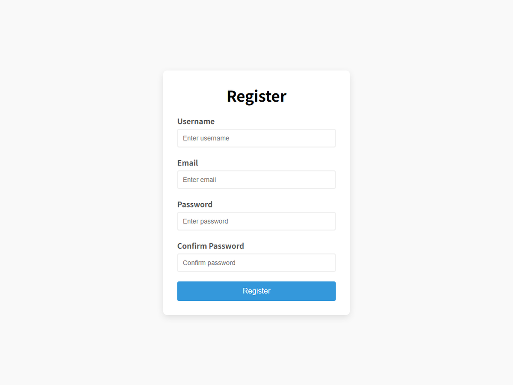
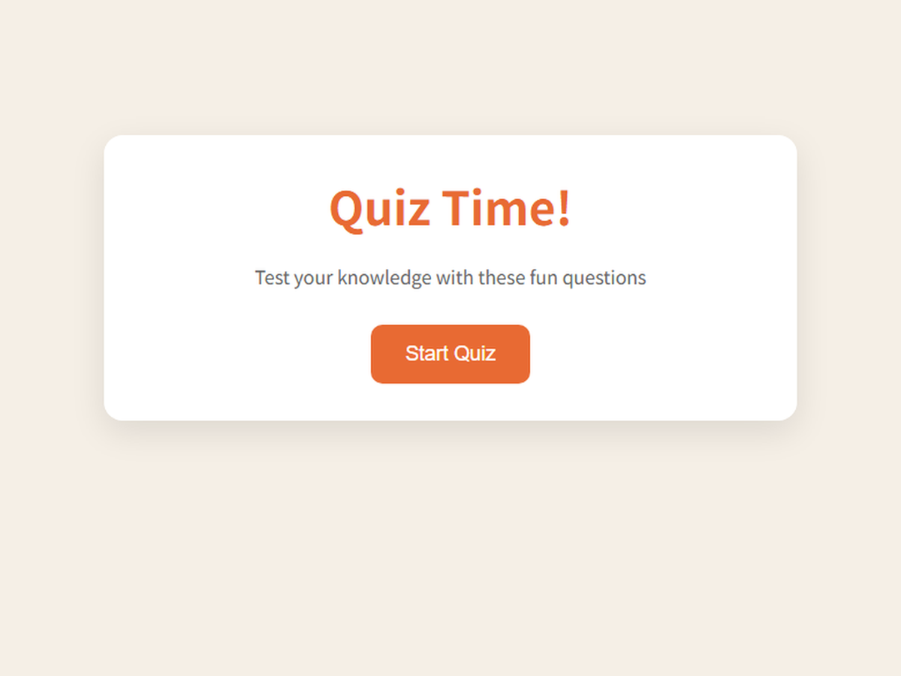
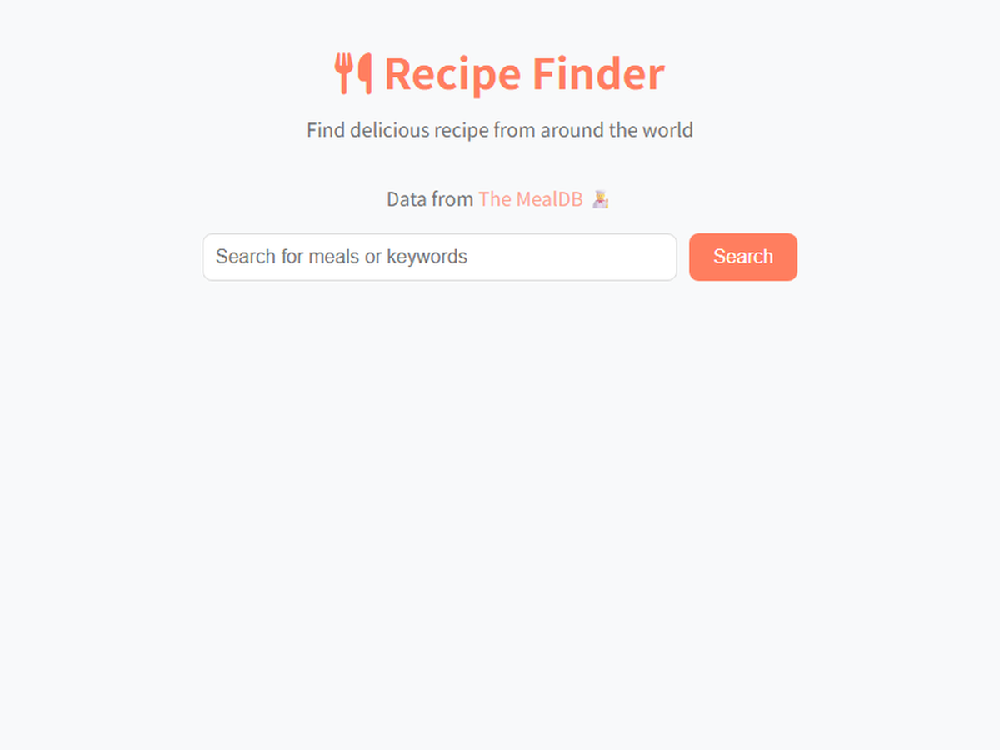

 Project 01 Register注册表单 注册表单的完整输入校验：必填判断、长度区间、邮箱正则，以及两次密码一致性检查，错误与成功状态分别用红绿边线提示。 HTML CSS JavaScript 表单校验 查看页面 →
 Project 02 Quiz Time答题游戏 从开始页、题目页到结果页的完整流程，包含题目进度、实时计分、进度条动画和结果评价，答完之后可以重新开始。 HTML CSS JavaScript 状态切换 查看页面 →
 Project 03 Recipe Finder食谱搜索 调用 TheMealDB 接口做食谱搜索，卡片列表展示菜品，点进去可以看完整做法、配料清单和视频链接，带空结果提示。 HTML CSS JavaScript REST API 查看页面 →